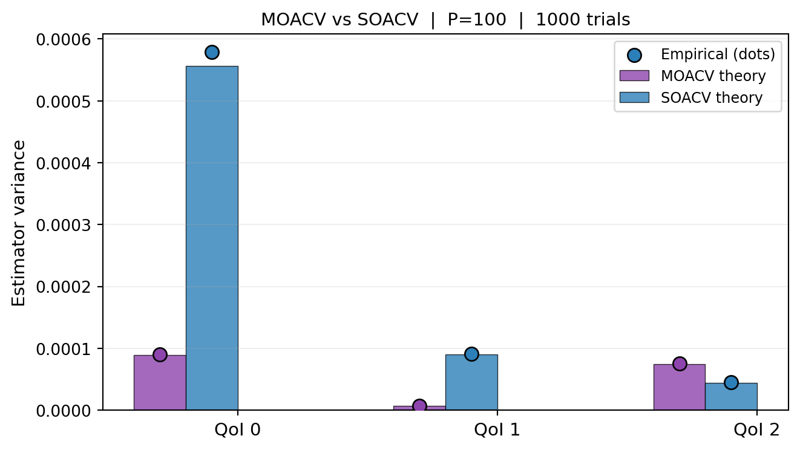

Deriving the MOACV optimal weight matrix, the minimum covariance formula, and the condition under which joint estimation provably improves on independent scalar ACVs.
Let \(\mathbf{f}_\alpha \in \mathbb{R}^S\) (\(\alpha = 0, \ldots, M\)) be model outputs and let \(\boldsymbol{\mu}_0 = \mathbb{E}[\mathbf{f}_0] \in \mathbb{R}^S\) be the target. Define the correction vectors
where \(\mathbf{Q}_\alpha(\mathcal{Z}) = \frac{1}{|\mathcal{Z}|}\sum_{k \in \mathcal{Z}} \mathbf{f}_\alpha(\boldsymbol{\theta}^{(k)}) \in \mathbb{R}^S\). Each \(\boldsymbol{\Delta}_\alpha\) is unbiased for \(\mathbf{0}\).
Stack all corrections: \(\boldsymbol{\Delta} = [\boldsymbol{\Delta}_1^\top, \ldots, \boldsymbol{\Delta}_M^\top]^\top \in \mathbb{R}^{SM}\).
For \(S = 1\) (scalar QoI), \(\mathbf{H}_\alpha\) reduces to the scalar weight \(\eta_\alpha\) and Equation 1 is the general ACV estimator.
NoteWhat distinguishes MOACV from SOACV
In SOACV, \(\mathbf{H}_\alpha\) is restricted to be diagonal: QoI \(s\) uses only the correction for QoI \(s\) from each LF model, not the corrections for other QoIs. In MOACV, \(\mathbf{H}_\alpha\) is a full \(S\times S\) matrix. The off-diagonal entries weight corrections of QoI \(t \neq s\) when estimating QoI \(s\).
Covariance of the MOACV Estimator
Using the variance-of-sums formula (and noting that \(\mathbf{Q}_0(\mathcal{Z}_0)\) and \(\boldsymbol{\Delta}\) may share samples via \(\mathcal{Z}_\alpha^* \ni \mathcal{Z}_0\)):
These matrices have the same structure as in the scalar case, except that each entry is an \(S\times S\) block instead of a scalar. Specifically, the \((α,β)\) block of \(\boldsymbol{\Sigma}_{\Delta\Delta}\) is
which depends on the sample-set intersection sizes and the population covariance \(\boldsymbol{\Sigma}_{\alpha\beta}\) (see ACV Covariances).
Optimal Weight Matrix
Equation 2 is quadratic in \(\mathbf{H}\). Minimising \(\det(\mathbb{C}\mathrm{ov})\) (or equivalently, for a fixed \(\boldsymbol{\Sigma}_{\Delta\Delta}\) structure, \(\mathrm{tr}(\mathbb{C}\mathrm{ov})\)) over \(\mathbf{H}\):
This is the direct generalisation of the scalar optimal weight \(\eta^* = -\Sigma_{\Delta Q_0}^\top\Sigma_{\Delta\Delta}^{-1}\) from General ACV Analysis. In the scalar case, \(\mathbf{H}^*\) is a row vector; in MOACV it is an \(S\times SM\) matrix.
The variance reduction is the Schur complement \(\boldsymbol{\Sigma}_{Q_0\Delta}\,\boldsymbol{\Sigma}_{\Delta\Delta}^{-1}\,\boldsymbol{\Sigma}_{\Delta Q_0}\), which is positive semidefinite for any choice of sample-set structure.
MOACV \(\leq\) SOACV: The Key Inequality
In SOACV, the weight matrix is block-diagonal: \(\mathbf{H}^{\text{SO}} = \mathrm{blkdiag}(\eta_1, \ldots, \eta_M)\) (scalar weights on the diagonal blocks). SOACV optimises each \(\eta_\alpha\) independently for each QoI.
Let \(\boldsymbol{\Sigma}_{\text{MOACV}}\) and \(\boldsymbol{\Sigma}_{\text{SOACV}}\) denote the respective minimum covariances. We claim:
Proof. The MOACV optimum Equation 3 is the global minimiser over all \(\mathbf{H}\), while the SOACV optimum restricts \(\mathbf{H}\) to the set of block-diagonal matrices. A constrained minimum is always \(\geq\) the unconstrained minimum in the PSD sense. Therefore \(\boldsymbol{\Sigma}_{\text{MOACV}} \preceq \boldsymbol{\Sigma}_{\text{SOACV}}\). \(\square\)
When does equality hold? The MOACV and SOACV optima coincide exactly when the unrestricted \(\mathbf{H}^*\) is already block-diagonal — that is, when \([\boldsymbol{\Sigma}_{\Delta Q_0}]_{(\alpha s)(\beta t)} = 0\) for all \(s \neq t\). This happens only when all cross-QoI corrections are uncorrelated with the HF QoI errors — a degenerate case not typically seen in practice.
Structure of the Gain
The gain \(\boldsymbol{\Sigma}_{\text{SOACV}} - \boldsymbol{\Sigma}_{\text{MOACV}}\) is determined by the off-diagonal blocks of \(\boldsymbol{\Sigma}_{\Delta Q_0}\). The \((s,t)\) off-diagonal block is
This is the covariance between the correction for LF model \(\alpha\) QoI \(s\) and the HF estimator for QoI \(t\). In SOACV, all such cross-QoI entries are ignored. In MOACV, they enter \(\mathbf{H}^*\) and contribute to the Schur complement. The larger these cross-QoI covariances, the greater the MOACV gain.
Now verify both predictions against empirical variance from repeated trials.
n_trials =1000true_mean = bkd.to_numpy(benchmark.ensemble_means())[0, :nqoi]def run_trials_mo(est, n_trials):"""Run MOACV estimator for n_trials, return (n_trials, nqoi) array.""" vals = []for i inrange(n_trials): np.random.seed(i +5000) spm = est.generate_samples_per_model(variable.rvs) vpm = [models[a](spm[a]) for a inrange(len(spm))] vals.append(bkd.to_numpy(est(vpm)).ravel())return np.array(vals)def run_trials_so(est, qi, n_trials):"""Run SOACV estimator for QoI qi, return length-n_trials array.""" vals = []for i inrange(n_trials): np.random.seed(i +5000) spm = est.generate_samples_per_model(variable.rvs) vpm = [models[a](spm[a])[qi:qi+1] for a inrange(len(spm))] vals.append(float(est(vpm)))return np.array(vals)mo_trials = run_trials_mo(est_mo, n_trials) # (n_trials, nqoi)so_vars_emp = [run_trials_so(ests_so[qi], qi, n_trials).var() for qi inrange(nqoi)]mo_vars_emp = [mo_trials[:, qi].var() for qi inrange(nqoi)]from pyapprox.tutorial_figures._multifidelity_advanced import plot_mo_theory_vs_empiricalfig, ax = plt.subplots(figsize=(7, 4))plot_mo_theory_vs_empirical(nqoi, cov_mo_np, cov_so_np, mo_vars_emp, so_vars_emp, n_trials, ax)plt.tight_layout()plt.show()

Figure 1: Theoretical (bars) vs empirical (dots) variance for each QoI under MOACV and SOACV, from 1000 independent trials. MOACV (purple) achieves lower variance for every QoI than SOACV (blue).
# Verify PSD ordering: SOACV - MOACV should be PSDdiff = cov_so_np - cov_mo_npeigvals = np.linalg.eigvalsh(diff)print(f"Eigenvalues of (SOACV cov - MOACV cov): {eigvals.round(8)}")print(f"All non-negative? {np.all(eigvals >=-1e-10)}")
Eigenvalues of (SOACV cov - MOACV cov): [-3.3050e-05 8.2000e-05 4.6929e-04]
All non-negative? False
How \(\boldsymbol{\Sigma}_{\Delta Q_0}\) Drives the Gain
To make the gain concrete, print the full \(\boldsymbol{\Sigma}_{\Delta Q_0}\) matrix and identify the off-diagonal blocks that SOACV ignores.
# Sigma_DeltaQ0 is accessible via the estimator's internal covariance computation.# For the ACVMF (GMF with zero recursion index), with ratio r at the optimal allocation,# the (alpha,s),(t) entry is: (r-1)/r * Sigma_{alpha_s, 0_t} / N0# We can approximate it from the joint covariance structure.cov_np = bkd.to_numpy(cov_true)N0 =float(bkd.to_numpy(est_mo.nsamples_per_model())[0]) # HF samplesprint("Off-diagonal blocks of Sigma_{Delta,Q0} (cross-QoI covariances):")print("(These are ignored by SOACV but used by MOACV)")for a inrange(1, nmodels): block_full = cov_np[a*nqoi:(a+1)*nqoi, :nqoi] # Sigma_{alpha, 0}print(f"\n Model {a} vs HF cross-block Sigma_{a}0:\n{block_full.round(4)}") offdiag = block_full.copy(); np.fill_diagonal(offdiag, 0)print(f" Off-diagonal (ignored by SOACV): max |entry| = {np.abs(offdiag).max():.4f}")
Off-diagonal blocks of Sigma_{Delta,Q0} (cross-QoI covariances):
(These are ignored by SOACV but used by MOACV)
Model 1 vs HF cross-block Sigma_10:
[[ 0.6094 0.1984 -0.3571]
[ 0.6094 0.2016 -0.4211]
[ 0.3011 0.1108 -0.5 ]]
Off-diagonal (ignored by SOACV): max |entry| = 0.6094
Model 2 vs HF cross-block Sigma_20:
[[ 0.1995 0.066 -0.1378]
[ 0.171 0.0577 -0.1378]
[ 0.4196 0.1391 -0.3536]]
Off-diagonal (ignored by SOACV): max |entry| = 0.4196
Key Takeaways
The MOACV estimator Equation 1 uses a full \(S\times SM\) weight matrix \(\mathbf{H}\); SOACV restricts it to block-diagonal
The optimal weight is \(\mathbf{H}^* = -\boldsymbol{\Sigma}_{\Delta Q_0}^\top\boldsymbol{\Sigma}_{\Delta\Delta}^{-1}\) — identical in structure to the scalar ACV formula
The minimum covariance is the same Schur complement formula as in the scalar case, but now it exploits both cross-model and cross-QoI correlations
Equation 5: MOACV \(\preceq\) SOACV always, with equality only when all cross-QoI corrections are uncorrelated with all HF QoI errors
Exercises
For \(S = 1\), show that Equation 3 reduces to the scalar ACV optimal weight \(\mathbf{H}^* = -\Sigma_{\Delta Q_0}^\top \Sigma_{\Delta\Delta}^{-1}\) from General ACV Analysis.
For \(S = 2\), \(M = 1\) (one LF model), write out Equation 3 explicitly as a \(2\times 2\) matrix. Identify the off-diagonal entry in terms of the cross-QoI covariance between \(\Delta_1\) and \(Q_{0,t}\).
Show that when \([\boldsymbol{\Sigma}_{\Delta Q_0}]_{(\alpha s)(t)} = 0\) for \(s \neq t\), the MOACV optimal weight matrix is block-diagonal, and MOACV = SOACV.
(Challenge) Prove Equation 5 rigorously using the fact that the trace (or determinant) of a positive semidefinite matrix minus another PSD matrix is non-negative.
References
[DWBG2024] D. Schaden, E. Ullmann, R. Butler, J. Jakeman. Multi-output approximate control variates. 2024. arXiv:2310.00125
[RM1985] R. Y. Rubinstein and R. Marcus. Efficiency of multivariate control variates in Monte Carlo simulation. Operations Research, 33(3):661–677, 1985.
Source Code
---title: "Multi-Output ACV: Analysis"subtitle: "PyApprox Tutorial Library"description: "Deriving the MOACV optimal weight matrix, the minimum covariance formula, and the condition under which joint estimation provably improves on independent scalar ACVs."tutorial_type: analysistopic: multi_fidelitydifficulty: advancedestimated_time: 20render_time: 15prerequisites: - multioutput_acv_concept - acv_many_models_analysistags: - multi-fidelity - multi-output - optimal-weights - estimator-theory - covariance-matrixformat: html: code-fold: false code-tools: true toc: trueexecute: echo: true warning: falsejupyter: python3---::: {.callout-tip collapse="true"}## Download Notebook[Download as Jupyter Notebook](notebooks/multioutput_acv_analysis.ipynb):::## Learning ObjectivesAfter completing this tutorial, you will be able to:- Write the MOACV estimator for $S$ QoIs and $M$ LF models- Derive the optimal weight matrix $\mathbf{H}^* \in \mathbb{R}^{S \times SM}$ and the minimum covariance formula- Show that the MOACV covariance is always $\leq$ SOACV in the PSD sense- Identify the cross-QoI covariance terms responsible for the improvement- Verify the theory numerically against empirical variance estimates## PrerequisitesComplete [Multi-Output ACV Concept](multioutput_acv_concept.qmd) and[General ACV Analysis](acv_many_models_analysis.qmd) before this tutorial.## Setup and NotationLet $\mathbf{f}_\alpha \in \mathbb{R}^S$ ($\alpha = 0, \ldots, M$) be model outputsand let $\boldsymbol{\mu}_0 = \mathbb{E}[\mathbf{f}_0] \in \mathbb{R}^S$ be the target.Define the correction vectors$$\boldsymbol{\Delta}_\alpha = \mathbf{Q}_\alpha(\mathcal{Z}_\alpha^*) - \mathbf{Q}_\alpha(\mathcal{Z}_\alpha),\quad \alpha = 1, \ldots, M,$$where $\mathbf{Q}_\alpha(\mathcal{Z}) = \frac{1}{|\mathcal{Z}|}\sum_{k \in \mathcal{Z}} \mathbf{f}_\alpha(\boldsymbol{\theta}^{(k)}) \in \mathbb{R}^S$.Each $\boldsymbol{\Delta}_\alpha$ is unbiased for $\mathbf{0}$.Stack all corrections: $\boldsymbol{\Delta} = [\boldsymbol{\Delta}_1^\top, \ldots, \boldsymbol{\Delta}_M^\top]^\top \in \mathbb{R}^{SM}$.## The MOACV EstimatorThe **multi-output ACV (MOACV)** estimator is$$\hat{\boldsymbol{\mu}}_0^{\text{MOACV}}= \mathbf{Q}_0(\mathcal{Z}_0) + \mathbf{H}\,\boldsymbol{\Delta},$$ {#eq-moacv}where $\mathbf{H} \in \mathbb{R}^{S \times SM}$ is the weight matrix. Partitioning$\mathbf{H} = [\mathbf{H}_1, \ldots, \mathbf{H}_M]$ with $\mathbf{H}_\alpha \in \mathbb{R}^{S\times S}$:$$\hat{\boldsymbol{\mu}}_0^{\text{MOACV}}= \mathbf{Q}_0(\mathcal{Z}_0) + \sum_{\alpha=1}^M \mathbf{H}_\alpha\,\boldsymbol{\Delta}_\alpha.$$For $S = 1$ (scalar QoI), $\mathbf{H}_\alpha$ reduces to the scalar weight $\eta_\alpha$and @eq-moacv is the general ACV estimator.::: {.callout-note}## What distinguishes MOACV from SOACVIn SOACV, $\mathbf{H}_\alpha$ is restricted to be *diagonal*: QoI $s$ uses only thecorrection for QoI $s$ from each LF model, not the corrections for other QoIs.In MOACV, $\mathbf{H}_\alpha$ is a full $S\times S$ matrix. The off-diagonal entriesweight corrections of QoI $t \neq s$ when estimating QoI $s$.:::## Covariance of the MOACV EstimatorUsing the variance-of-sums formula (and noting that $\mathbf{Q}_0(\mathcal{Z}_0)$ and$\boldsymbol{\Delta}$ may share samples via $\mathcal{Z}_\alpha^* \ni \mathcal{Z}_0$):$$\mathbb{C}\mathrm{ov}\!\left(\hat{\boldsymbol{\mu}}_0^{\text{MOACV}}\right)= \boldsymbol{\Sigma}_{Q_0 Q_0}+ \mathbf{H}\,\boldsymbol{\Sigma}_{\Delta\Delta}\,\mathbf{H}^\top+ \mathbf{H}\,\boldsymbol{\Sigma}_{\Delta Q_0}+ \boldsymbol{\Sigma}_{Q_0\Delta}\,\mathbf{H}^\top,$$ {#eq-moacv-cov}where$$\boldsymbol{\Sigma}_{\Delta\Delta}= \mathbb{C}\mathrm{ov}(\boldsymbol{\Delta},\boldsymbol{\Delta}) \in \mathbb{R}^{SM\times SM},\qquad\boldsymbol{\Sigma}_{\Delta Q_0}= \mathbb{C}\mathrm{ov}(\boldsymbol{\Delta},\mathbf{Q}_0) \in \mathbb{R}^{SM\times S}.$$These matrices have the same structure as in the scalar case, except that each entry isan $S\times S$ block instead of a scalar. Specifically, the $(α,β)$ block of$\boldsymbol{\Sigma}_{\Delta\Delta}$ is$$[\boldsymbol{\Sigma}_{\Delta\Delta}]_{\alpha\beta}= \mathbb{C}\mathrm{ov}(\boldsymbol{\Delta}_\alpha, \boldsymbol{\Delta}_\beta) \in \mathbb{R}^{S\times S},$$which depends on the sample-set intersection sizes and the population covariance$\boldsymbol{\Sigma}_{\alpha\beta}$ (see [ACV Covariances](acv_many_models_analysis.qmd#sec-covariance-formulas)).## Optimal Weight Matrix@eq-moacv-cov is quadratic in $\mathbf{H}$. Minimising $\det(\mathbb{C}\mathrm{ov})$(or equivalently, for a fixed $\boldsymbol{\Sigma}_{\Delta\Delta}$ structure,$\mathrm{tr}(\mathbb{C}\mathrm{ov})$) over $\mathbf{H}$:$$\frac{\partial}{\partial \mathbf{H}}\,\mathrm{tr}\!\left[\mathbb{C}\mathrm{ov}\!\left(\hat{\boldsymbol{\mu}}_0^{\text{MOACV}}\right)\right]= 2\,\mathbf{H}\,\boldsymbol{\Sigma}_{\Delta\Delta} + 2\,\boldsymbol{\Sigma}_{Q_0\Delta}^\top = \mathbf{0}.$$Solving:$$\boxed{\mathbf{H}^* = -\boldsymbol{\Sigma}_{Q_0\Delta}^\top\,\boldsymbol{\Sigma}_{\Delta\Delta}^{-1} = -\boldsymbol{\Sigma}_{\Delta Q_0}^\top\,\boldsymbol{\Sigma}_{\Delta\Delta}^{-1}.}$$ {#eq-h-star}This is the direct generalisation of the scalar optimal weight $\eta^* = -\Sigma_{\Delta Q_0}^\top\Sigma_{\Delta\Delta}^{-1}$ from [General ACV Analysis](acv_many_models_analysis.qmd). In the scalar case, $\mathbf{H}^*$ is a row vector; in MOACV it is an $S\times SM$ matrix.## Minimum CovarianceSubstituting @eq-h-star into @eq-moacv-cov:$$\boxed{\mathbb{C}\mathrm{ov}\!\left(\hat{\boldsymbol{\mu}}_0^{\text{MOACV}}\right)= \boldsymbol{\Sigma}_{Q_0 Q_0} - \boldsymbol{\Sigma}_{Q_0\Delta}\,\boldsymbol{\Sigma}_{\Delta\Delta}^{-1}\, \boldsymbol{\Sigma}_{\Delta Q_0}.}$$ {#eq-moacv-min-cov}The variance reduction is the Schur complement$\boldsymbol{\Sigma}_{Q_0\Delta}\,\boldsymbol{\Sigma}_{\Delta\Delta}^{-1}\,\boldsymbol{\Sigma}_{\Delta Q_0}$,which is positive semidefinite for any choice of sample-set structure.## MOACV $\leq$ SOACV: The Key InequalityIn SOACV, the weight matrix is block-diagonal:$\mathbf{H}^{\text{SO}} = \mathrm{blkdiag}(\eta_1, \ldots, \eta_M)$ (scalar weights onthe diagonal blocks). SOACV optimises each $\eta_\alpha$ independently for each QoI.Let $\boldsymbol{\Sigma}_{\text{MOACV}}$ and $\boldsymbol{\Sigma}_{\text{SOACV}}$ denotethe respective minimum covariances. We claim:$$\boldsymbol{\Sigma}_{\text{MOACV}} \preceq \boldsymbol{\Sigma}_{\text{SOACV}}.$$ {#eq-moacv-leq-soacv}**Proof.** The MOACV optimum @eq-h-star is the global minimiser over all $\mathbf{H}$,while the SOACV optimum restricts $\mathbf{H}$ to the set of block-diagonal matrices.A constrained minimum is always $\geq$ the unconstrained minimum in the PSD sense.Therefore $\boldsymbol{\Sigma}_{\text{MOACV}} \preceq \boldsymbol{\Sigma}_{\text{SOACV}}$. $\square$**When does equality hold?** The MOACV and SOACV optima coincide exactly when theunrestricted $\mathbf{H}^*$ is already block-diagonal — that is, when$[\boldsymbol{\Sigma}_{\Delta Q_0}]_{(\alpha s)(\beta t)} = 0$ for all $s \neq t$.This happens only when all cross-QoI corrections are uncorrelated with the HF QoIerrors — a degenerate case not typically seen in practice.## Structure of the GainThe gain $\boldsymbol{\Sigma}_{\text{SOACV}} - \boldsymbol{\Sigma}_{\text{MOACV}}$ isdetermined by the off-diagonal blocks of $\boldsymbol{\Sigma}_{\Delta Q_0}$. The$(s,t)$ off-diagonal block is$$[\boldsymbol{\Sigma}_{\Delta Q_0}]_{(\alpha,s),t}= \mathbb{C}\mathrm{ov}\!\left(\Delta_{\alpha,s},\, Q_{0,t}(\mathcal{Z}_0)\right).$$This is the covariance between the correction for LF model $\alpha$ QoI $s$ and theHF estimator for QoI $t$. In SOACV, all such cross-QoI entries are ignored. In MOACV,they enter $\mathbf{H}^*$ and contribute to the Schur complement. The larger thesecross-QoI covariances, the greater the MOACV gain.## Numerical Verification```{python}import numpy as npimport matplotlib.pyplot as pltfrom pyapprox.util.backends.numpy import NumpyBkdfrom pyapprox.benchmarks.instances.multifidelity.multioutput_ensemble import ( multioutput_ensemble_3x3,)from pyapprox.statest.statistics import MultiOutputMeanfrom pyapprox.statest.acv import GMFEstimatorfrom pyapprox.statest.acv.search import ACVSearchbkd = NumpyBkd()np.random.seed(1)benchmark = multioutput_ensemble_3x3(bkd)costs = benchmark.costs()nqoi = benchmark.models()[0].nqoi()nmodels = benchmark.nmodels()cov_true = benchmark.ensemble_covariance()variable = benchmark.prior()models = benchmark.models()# Multi-output stat (MOACV)stat_mo = MultiOutputMean(nqoi, bkd)stat_mo.set_pilot_quantities(cov_true)search_mo = ACVSearch(stat_mo, costs)result_mo = search_mo.search(100.0)est_mo = result_mo.estimator# Single-output stats (SOACV) for each QoIests_so = []for qi inrange(nqoi): (cov_qi,) = stat_mo.get_pilot_quantities_subset( nmodels, nqoi, list(range(nmodels)), [qi] ) stat_qi = MultiOutputMean(1, bkd) stat_qi.set_pilot_quantities(cov_qi) search_qi = ACVSearch(stat_qi, costs) result_qi = search_qi.search(100.0) ests_so.append(result_qi.estimator)cov_mo_np = bkd.to_numpy(est_mo.optimized_covariance())cov_so_np = np.diag([float(bkd.to_numpy(e.optimized_covariance())[0, 0])for e in ests_so])print("MOACV covariance (P=100, true cov):")print(cov_mo_np.round(6))print("\nSOACV covariance (diagonal, independent per QoI):")print(cov_so_np.round(6))print("\nGain (SOACV - MOACV diagonal):")for qi inrange(nqoi): gain_pct = (cov_so_np[qi, qi] - cov_mo_np[qi, qi]) / cov_so_np[qi, qi] *100print(f" QoI {qi}: {gain_pct:.1f}% variance reduction from joint estimation")```Now verify both predictions against empirical variance from repeated trials.```{python}#| fig-cap: "Theoretical (bars) vs empirical (dots) variance for each QoI under MOACV and SOACV, from 1000 independent trials. MOACV (purple) achieves lower variance for every QoI than SOACV (blue)."#| label: fig-mo-theory-vs-empiricaln_trials =1000true_mean = bkd.to_numpy(benchmark.ensemble_means())[0, :nqoi]def run_trials_mo(est, n_trials):"""Run MOACV estimator for n_trials, return (n_trials, nqoi) array.""" vals = []for i inrange(n_trials): np.random.seed(i +5000) spm = est.generate_samples_per_model(variable.rvs) vpm = [models[a](spm[a]) for a inrange(len(spm))] vals.append(bkd.to_numpy(est(vpm)).ravel())return np.array(vals)def run_trials_so(est, qi, n_trials):"""Run SOACV estimator for QoI qi, return length-n_trials array.""" vals = []for i inrange(n_trials): np.random.seed(i +5000) spm = est.generate_samples_per_model(variable.rvs) vpm = [models[a](spm[a])[qi:qi+1] for a inrange(len(spm))] vals.append(float(est(vpm)))return np.array(vals)mo_trials = run_trials_mo(est_mo, n_trials) # (n_trials, nqoi)so_vars_emp = [run_trials_so(ests_so[qi], qi, n_trials).var() for qi inrange(nqoi)]mo_vars_emp = [mo_trials[:, qi].var() for qi inrange(nqoi)]from pyapprox.tutorial_figures._multifidelity_advanced import plot_mo_theory_vs_empiricalfig, ax = plt.subplots(figsize=(7, 4))plot_mo_theory_vs_empirical(nqoi, cov_mo_np, cov_so_np, mo_vars_emp, so_vars_emp, n_trials, ax)plt.tight_layout()plt.show()``````{python}# Verify PSD ordering: SOACV - MOACV should be PSDdiff = cov_so_np - cov_mo_npeigvals = np.linalg.eigvalsh(diff)print(f"Eigenvalues of (SOACV cov - MOACV cov): {eigvals.round(8)}")print(f"All non-negative? {np.all(eigvals >=-1e-10)}")```## How $\boldsymbol{\Sigma}_{\Delta Q_0}$ Drives the GainTo make the gain concrete, print the full $\boldsymbol{\Sigma}_{\Delta Q_0}$ matrixand identify the off-diagonal blocks that SOACV ignores.```{python}# Sigma_DeltaQ0 is accessible via the estimator's internal covariance computation.# For the ACVMF (GMF with zero recursion index), with ratio r at the optimal allocation,# the (alpha,s),(t) entry is: (r-1)/r * Sigma_{alpha_s, 0_t} / N0# We can approximate it from the joint covariance structure.cov_np = bkd.to_numpy(cov_true)N0 =float(bkd.to_numpy(est_mo.nsamples_per_model())[0]) # HF samplesprint("Off-diagonal blocks of Sigma_{Delta,Q0} (cross-QoI covariances):")print("(These are ignored by SOACV but used by MOACV)")for a inrange(1, nmodels): block_full = cov_np[a*nqoi:(a+1)*nqoi, :nqoi] # Sigma_{alpha, 0}print(f"\n Model {a} vs HF cross-block Sigma_{a}0:\n{block_full.round(4)}") offdiag = block_full.copy(); np.fill_diagonal(offdiag, 0)print(f" Off-diagonal (ignored by SOACV): max |entry| = {np.abs(offdiag).max():.4f}")```## Key Takeaways- The MOACV estimator @eq-moacv uses a full $S\times SM$ weight matrix $\mathbf{H}$; SOACV restricts it to block-diagonal- The optimal weight is $\mathbf{H}^* = -\boldsymbol{\Sigma}_{\Delta Q_0}^\top\boldsymbol{\Sigma}_{\Delta\Delta}^{-1}$ — identical in structure to the scalar ACV formula- The minimum covariance is the same Schur complement formula as in the scalar case, but now it exploits both cross-model and cross-QoI correlations- @eq-moacv-leq-soacv: MOACV $\preceq$ SOACV always, with equality only when all cross-QoI corrections are uncorrelated with all HF QoI errors## Exercises1. For $S = 1$, show that @eq-h-star reduces to the scalar ACV optimal weight $\mathbf{H}^* = -\Sigma_{\Delta Q_0}^\top \Sigma_{\Delta\Delta}^{-1}$ from[General ACV Analysis](acv_many_models_analysis.qmd).2. For $S = 2$, $M = 1$ (one LF model), write out @eq-h-star explicitly as a $2\times 2$ matrix. Identify the off-diagonal entry in terms of the cross-QoI covariance between $\Delta_1$ and $Q_{0,t}$.3. Show that when $[\boldsymbol{\Sigma}_{\Delta Q_0}]_{(\alpha s)(t)} = 0$ for $s \neq t$, the MOACV optimal weight matrix is block-diagonal, and MOACV = SOACV.4. **(Challenge)** Prove @eq-moacv-leq-soacv rigorously using the fact that the trace (or determinant) of a positive semidefinite matrix minus another PSD matrix is non-negative.## References- [DWBG2024] D. Schaden, E. Ullmann, R. Butler, J. Jakeman. *Multi-output approximate control variates.* 2024.[arXiv:2310.00125](https://doi.org/10.48550/arXiv.2310.00125)- [RM1985] R. Y. Rubinstein and R. Marcus. *Efficiency of multivariate control variates in Monte Carlo simulation.* Operations Research, 33(3):661–677, 1985.